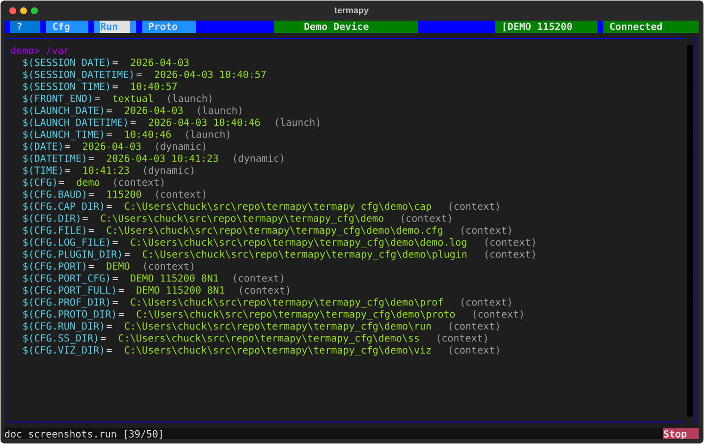

Variables¶

Termapy has a variable system that lets you define, expand, and reuse
values across commands, scripts, and config fields. Variables use
$(NAME) syntax.
Setting Variables¶
Assign variables directly at the command line (no / prefix needed):
Or use the REPL command:
Using Variables¶
Variables expand anywhere — serial commands, REPL commands, scripts:
Built-in Variables¶
| Variable | Type | Description |
|---|---|---|
$(DATE) |
Dynamic | Current date (YYYY-MM-DD) |
$(TIME) |
Dynamic | Current time (HH:MM:SS) |
$(DATETIME) |
Dynamic | Current date and time |
$(CFG) |
Context | Current config name |
$(LAUNCH_DATE) |
Launch | App start date (frozen) |
$(LAUNCH_TIME) |
Launch | App start time (frozen) |
$(LAUNCH_DATETIME) |
Launch | App start date and time (frozen) |
$(SESSION_DATE) |
Session | Script start date (frozen) |
$(SESSION_TIME) |
Session | Script start time (frozen) |
$(SESSION_DATETIME) |
Session | Script start date and time (frozen) |
$(FRONT_END) |
Launch | textual (TUI) or cli |
Dynamic variables update each time they are expanded. Launch variables are frozen when the app starts. Session variables are set once when a script launches from the Scripts button or Run menu.
Environment Variables¶
Access OS environment variables with $(env.NAME) syntax. This is
especially useful in config files for values that differ per machine:
The | provides a fallback default. See Using with Git
for team workflow details.
| Command | Description |
|---|---|
/env.list {pattern} |
List environment variables |
/env.set <n> <v> |
Set a session-scoped environment variable |
/env.reload |
Re-snapshot variables from the OS |
Sequence Counters¶
Auto-incrementing counters for scripts (useful for numbered filenames):
Use {seqN+} to increment and substitute, {seqN} to substitute
without incrementing. Counters 1--9 are available.
| Command | Description |
|---|---|
/seq |
Show all sequence counter values |
/seq.reset |
Reset all counters to zero |
Variable Commands¶
| Command | Description |
|---|---|
/var |
List all variables |
/var NAME |
Show one variable |
/var.set <NAME> <v> |
Set a variable |
/var.clear |
Clear all user variables |
Escaping¶
Use \$ to prevent expansion:
Use /raw to send a line with no expansion at all:
Scope¶
User variables persist for the session. They are cleared automatically
when a script launches from the Scripts button or Run menu, but NOT
when /run is typed interactively. Use /var.clear to reset manually.